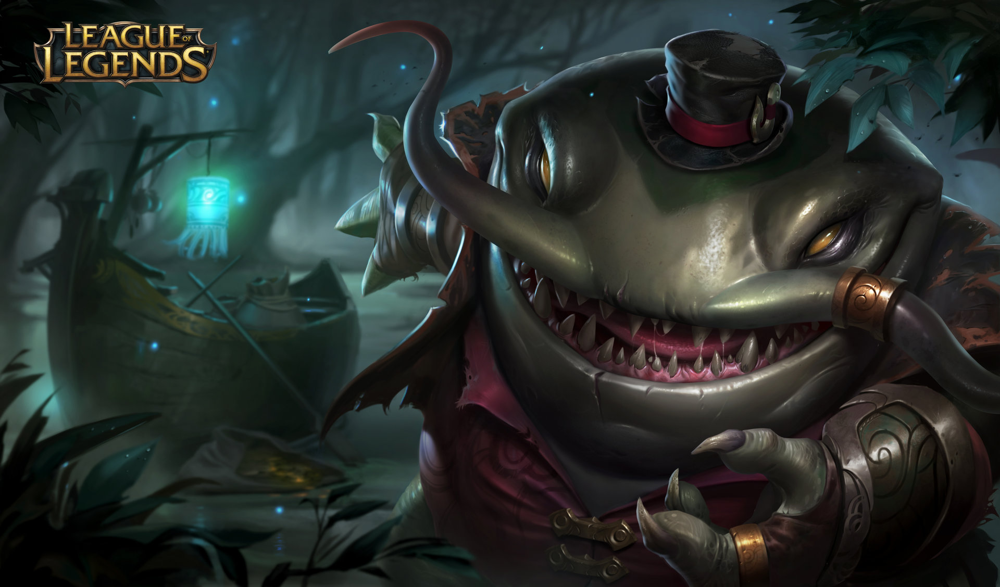

tu devrais essayer Tahm Kench

le démon des eaux de la failles est toujours efrayant pour ses adversaires, infligeant d'énormes dégats pour un tank ce n'est pas pour autant sa fonction première, possédant une immobilisation à distance, il peut aussi capturer un allié dans sa bouche pour se déplacer avec lui sur la carte ou le sauver d'une mort certaine